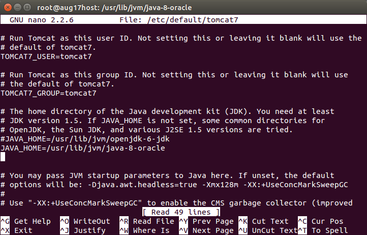

sudo apt-get install tasksel
sudo apt-get install tomcat7
sudo apt-get install tomcat7-docs tomcat7-admin
tomcat7-examples
To test the installation:
go to
nano /etc/default/tomcat7
JAVA_HOME=/usr/lib/jvm/java-8-oracle

To allow the web management interface:
sudo nano /etc/tomcat7/tomcat-users.xml
and add the lines
<tomcat-users>
<user username="admin"
password="password" roles="manager-gui,admin-gui" />
</tomcat-users>
service tomcat7 restart
nano /etc/default/tomcat7
JAVA_OPTS="-Djava.security.egd=file:/dev/./urandom
-Djava.awt.headless=true -Xmx1024m -XX:MaxPermSize=512m
-XX:+UseConcMarkSweepGC"
http://php-java-bridge.sourceforge.net/
Install php-cgi:
sudo apt-get install php5-cgi libapache2-mod-php5
java -classpath JavaBridge.war TestInstallation